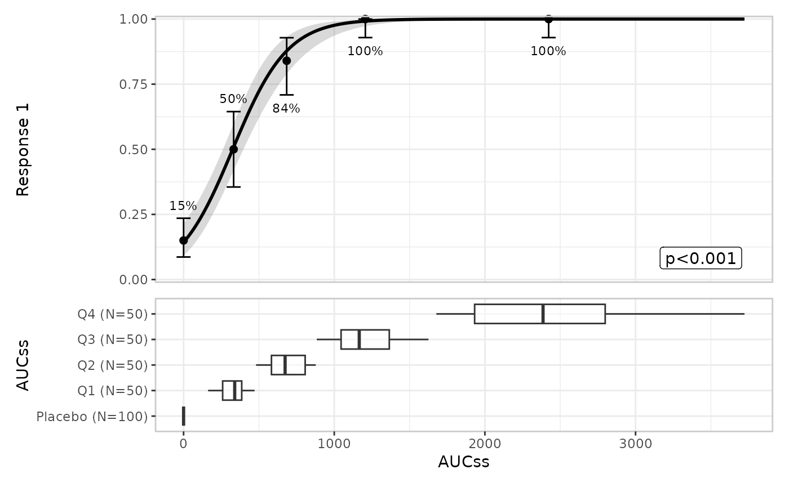
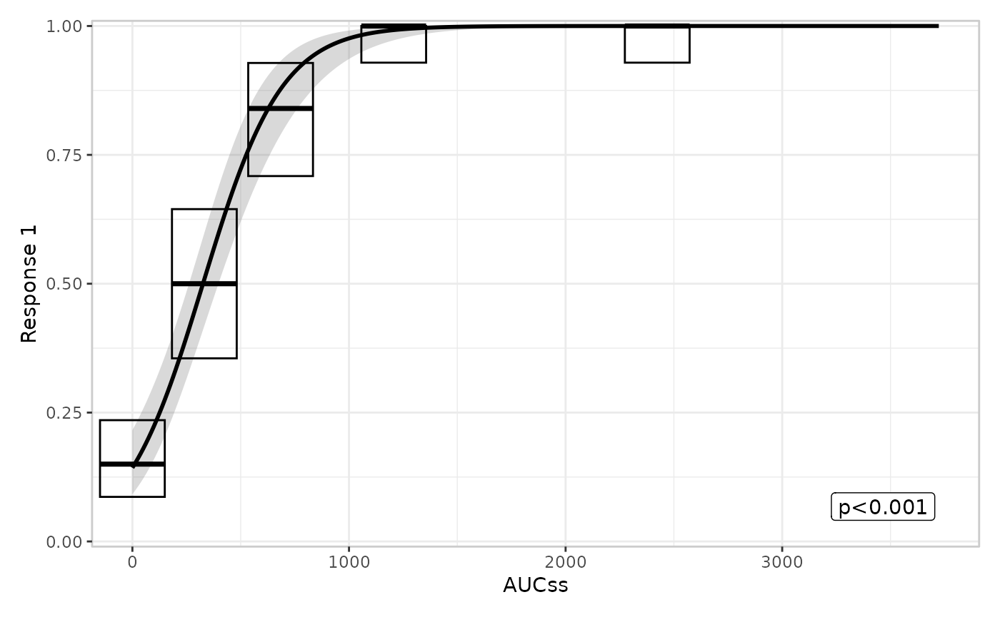

This article is about the grammar erplots plots are built
from, not about any one plot’s mechanics – for worked examples of each
layer, see the Plotting article. If a design
choice described here ever changes, this article and
PLAN.md’s “Mini-language architecture review” section
should be updated together; see the note at the end.
Building a plot is composing layers onto an object
er_plot() creates an empty object of class
er_plot, storing the data and the plot’s
exposure/response/stratification variables. You then pipe it through one
or more layer functions, each of which adds one visual
component, and finish with plot()/print() (or
[er_plot_build()] directly):
mod <- erglm_model(ae1 ~ aucss, erglm_data, family = binomial())
erglm_data |>
er_plot(aucss, ae1) |>
er_plot_show_model(mod) |>
er_plot_show_quantiles() |>
er_plot_show_groups(aucss) |>
plot()
observed data
|
v
er_plot() -- creates the (empty) object
|
v
layer functions (piped, any order, any subset):
er_plot_show_model()
er_plot_show_quantiles()
er_plot_show_data()
er_plot_show_groups()
|
v
er_plot_build() -- called for you by plot()/print()
|
v
polish: margins, labels, legends, theme
|
v
compose: patchwork
|
v
rendered plotThere are currently four layers, each documented on its own help topic:
| Layer | Function | Shows | Depends on response_type? |
|---|---|---|---|
| Model | [er_plot_show_model()] | Fitted curve/ribbon (or spaghetti) plus an optional summary annotation | No |
| Quantile | [er_plot_show_quantiles()] | Exposure-quantile-binned response summary (rate/mean + CI) | Yes |
| Data | [er_plot_show_data()] | Raw observations, by default overlaid on the model panel at their true (exposure, response) coordinates ([build_data_overlay()]); or, for a binary response, [build_data_boxjitter()]’s older panel-based boxplot + jitter design | Yes |
| Group | [er_plot_show_groups()] | Exposure distribution, boxplot/violin, split by a grouping variable | No |
Layers are either singleton or additive
Calling a layer function twice on the same object doesn’t always do the same thing. The model, quantile, and data layers are singleton: a second call replaces the first call’s result rather than combining the two.
plt <- erglm_data |>
er_plot(aucss, ae1) |>
er_plot_show_quantiles(bins = 4) |>
er_plot_show_quantiles(bins = 8) # overwrites the bins = 4 call
plt$part$quantile$config$n_quantiles # 8, not 4
#> [1] 8The group layer is the one exception: it’s additive. Each call adds another panel alongside any already added, rather than replacing them:
plt <- erglm_data |>
er_plot(aucss, ae1) |>
er_plot_show_groups(aucss) |>
er_plot_show_groups(treatment) # adds a second panel, doesn't replace the first
names(plt$part$group$config) # both grouping variables are still there
#> [1] "treatment"This is a deliberate design choice, not an oversight: there is only
one “the model” and one “the quantile summary” to show per plot, but
many legitimate ways to slice the exposure distribution by different
grouping variables. The one flagged exception to watch for: because the
model layer is singleton, overlaying two model curves for comparison
(e.g. a candidate model against a reference model) isn’t currently
possible. That’s tracked as a plausible future addition, not planned
work – see PLAN.md.
Stratification composes with layers, usually via color
stratify_by, set once in er_plot(),
declares a single discrete variable used to split layers by color/fill,
with one shared, deduplicated legend across the whole composed plot:
mod_strat <- erglm_model(ae1 ~ aucss + sex, erglm_data, family = binomial())
erglm_data |>
er_plot(aucss, ae1, stratify_by = sex) |>
er_plot_show_model(mod_strat) |>
er_plot_show_quantiles() |>
er_plot_show_data() |>
plot()
Each layer’s own keep_strata argument controls whether
that layer uses the stratification (default TRUE
whenever stratify_by was set). The general rule, in the
order a layer actually applies it: a layer’s own encoding takes
precedence; stratification adapts to whatever channel is left,
defaulting to color/fill.
For most layers, color/fill is always free for strata, so this rule is invisible in practice. The data layer is the one exception, and its behaviour now depends on which builder is in play, and which structural family (declared via [er_layout()]) that builder belongs to:
-
build_data_overlay()(the default,"overlay"-layout): color, when mapped at all, always means strata – the response is already shown via y-position, so color/fill is free for stratification like every other layer, and the overlay shares the base plot’s own strata legend with the model/quantile layers. -
build_data_boxjitter()(the older, panel-based design,"panel"-layout, binary-response only): behaves the same way as overlay – color/fill means strata, shared legend. There is no built-in"panel"-layout builder for a continuous/count response today; if one is written, its color aesthetic would typically already be spoken for by the response value itself (as the removedbuild_data_color()builder’s was), in which case stratification should fall back to one panel per stratum level instead of a shared legend – the concrete instance of “a layer’s own encoding takes precedence” that motivated the general rule. SeePLAN.md’s “Continuous-response data strip” section for that design history, and [er_plot_show_data()] for the full breakdown.
A config$color_role tag ("strata" or
"response", set by .part_data()) records which
meaning applies for a given data-layer build, so the composition
machinery (.polish_labels()/
.polish_legends()) knows whether to treat a builder’s
legend as the shared strata legend or a standalone response
colorbar.
Response type changes what a layer summarises, not whether it appears
response_type, also set once in er_plot()
("auto", "binary", "continuous",
or "count"), governs the response’s scale and which
summary/CI method a response-type-aware layer uses. The model and group
layers don’t look at the response’s type at all – they only consume
[er_predict()]/[er_simulate()] output or the exposure variable,
respectively. The quantile layer dispatches on it directly:
response_type |
Bin summary | CI method |
|---|---|---|
"binary" |
Response rate | Clopper-Pearson ([clopper_pearson()]) |
"continuous" |
Mean | t-interval ([t_interval()]) |
"count" |
Mean | Exact Poisson interval ([poisson_interval()]) |
"auto" classifies a response as "binary" if
it’s logical or confined to {0, 1}, and
"continuous" otherwise – so a genuine count response
auto-detects as "continuous" and is summarised as an
approximately-continuous quantity unless
response_type = "count" is declared explicitly. See
[er_plot_show_quantiles()] for the full rationale and the Plotting article’s “Continuous responses” section
for worked examples, including a case where the choice between the
t-interval and exact Poisson interval visibly matters.
The data layer doesn’t compute a summary statistic at all – it just
plots raw observations – so response_type instead changes
how it’s drawn: build_data_overlay() (the default)
needs no dispatch (a plain scatter, or a small vertical jitter for a
binary response’s exactly-0/1 y-values);
build_data_boxjitter() is binary-response only, and uses
response_type only insofar as
er_plot_show_data() guards against using it on a
continuous/count response at all (there’s no upper/lower partition to
split on) – see [er_plot_show_data()].
Extending erplots: writing your own builder
Every layer function delegates the actual drawing to a
build_*() function sharing a common signature –
function(data, config, stratify, exposure, response, strata, style).
That signature is a documented, public part of the API (see
[er_partial()]), and each layer function’s builder argument
(er_plot_show_model() additionally has
summary_builder) defaults to one built-in
build_*() function (e.g. [er_plot_show_quantiles()]’s
defaults to build_quantile_errorbar()) and can be set to
any other function matching the same signature – no need to fork the
package or reach into object$part internals:
build_quantile_crossbar <- function(data, config, stratify, exposure, response, strata, style) {
ggplot2::geom_crossbar(
data = config$summary,
mapping = ggplot2::aes(x = x_mid, y = y_mid, ymin = ci_lower, ymax = ci_upper),
inherit.aes = FALSE
)
}
erglm_data |>
er_plot(aucss, ae1) |>
er_plot_show_model(mod) |>
er_plot_show_quantiles(builder = build_quantile_crossbar) |>
plot()
A custom builder receives the same pre-computed config a
built-in builder would (e.g. config$summary for the
quantile layer, config$predictions for the model layer), so
it only needs to turn that config into ggplot2 layers, not
recompute anything.
For the data layer, a custom builder must also declare
which structural family it belongs to, via [er_layout()]:
er_layout(fn, "overlay") slots it into a single call merged
onto the main panel, while er_layout(fn, "panel") slots it
into one-or-more panels stacked below the base plot.
[er_plot_show_data()] reads this tag off builder itself to
decide how to assemble the layer, rather than taking a separate argument
for it – so a builder like build_data_overlay() can never
accidentally end up routed into upper/lower panels, or vice versa. The
other three layers have only one structural call site, so no such
tagging is needed there.
build_quantile_pointrange() (a single
geom_pointrange() in place of
build_quantile_errorbar()’s separate point + error bar)
started life as exactly this kind of custom builder, and was promoted to
a built-in option once it proved to need no new config
fields – a reasonable bar to check your own custom builders against, if
you’re deciding whether to propose one upstream. See the
@examples on [er_plot_show_model()],
[er_plot_show_quantiles()], and [er_plot_show_data()] for further worked
custom builders (a dashed model curve and a data-overlay scatter), and
[er_partial()]’s “Writing your own builder” section for the full
contract.
Keeping this article in sync
This article describes the grammar as designed and implemented
today. Whenever a future change lands that alters any of the
above – renaming a layer, changing which layers are singleton
vs. additive, changing how stratification composes with a layer’s own
encoding, or adding/removing a response_type dispatch –
update this article in the same change, and update the cross-references
in PLAN.md’s “Mini-language architecture review” section
(which points here) to match. Treat a design change that isn’t reflected
here as incomplete.